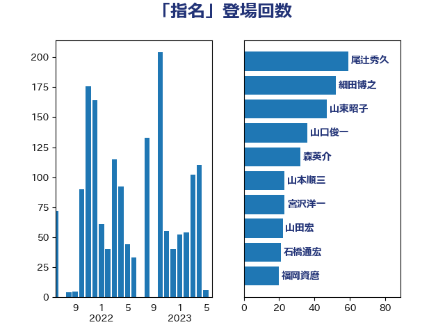

単語「指名」

| 山東昭子 | 自由民主党 | 80 回 |
| 細田博之 | 自由民主党 | 44 回 |
| 山本順三 | 自由民主党 | 36 回 |
| 尾辻秀久 | 無所属 | 28 回 |
| 野村哲郎 | 自由民主党 | 28 回 |
| 高木毅 | 自由民主党 | 26 回 |
| 野田国義 | 立憲民主党 | 25 回 |
| 鶴保庸介 | 自由民主党 | 25 回 |
| 宮沢洋一 | 自由民主党 | 24 回 |
| 山谷えり子 | 自由民主党 | 24 回 |
| 松村祥史 | 自由民主党 | 24 回 |
| 山口俊一 | 自由民主党 | 22 回 |
| 吉田忠智 | 立憲民主党 | 20 回 |
| 森英介 | 自由民主党 | 19 回 |
| 上月良祐 | 自由民主党 | 17 回 |
| 石橋通宏 | 立憲民主党 | 17 回 |
| 福岡資麿 | 自由民主党 | 17 回 |
| 根本匠 | 自由民主党 | 16 回 |
| 金田勝年 | 自由民主党 | 16 回 |
| 上野賢一郎 | 自由民主党 | 15 回 |
| 松下新平 | 自由民主党 | 15 回 |
| 矢倉克夫 | 公明党 | 14 回 |
| 佐々木さやか | 公明党 | 13 回 |
| 山田宏 | 自由民主党 | 13 回 |
| 平木大作 | 公明党 | 13 回 |
| 徳永エリ | 立憲民主党 | 13 回 |
| 斎藤嘉隆 | 立憲民主党 | 13 回 |
| 橋本岳 | 自由民主党 | 13 回 |
| 長浜博行 | 無所属 | 13 回 |
| 馬場成志 | 自由民主党 | 13 回 |
| 大塚拓 | 自由民主党 | 12 回 |
| 山本香苗 | 公明党 | 12 回 |
| 浜田靖一 | 自由民主党 | 12 回 |
| 豊田俊郎 | 自由民主党 | 12 回 |
| 鈴木宗男 | 日本維新の会 | 11 回 |
| 木原誠二 | 自由民主党 | 10 回 |
| 林芳正 | 自由民主党 | 10 回 |
| 森山浩行 | 立憲民主党 | 10 回 |
| 菅義偉 | 自由民主党 | 9 回 |
| 佐藤信秋 | 自由民主党 | 8 回 |
| 大塚耕平 | 国民民主党 | 8 回 |
| 山田賢司 | 自由民主党 | 8 回 |
| 新妻秀規 | 公明党 | 8 回 |
| 森屋宏 | 自由民主党 | 8 回 |
| 石井浩郎 | 自由民主党 | 8 回 |
| 石田真敏 | 自由民主党 | 8 回 |
| 古川禎久 | 自由民主党 | 7 回 |
| 杉尾秀哉 | 立憲民主党 | 7 回 |
| 西村智奈美 | 立憲民主党 | 7 回 |
| 赤澤亮正 | 自由民主党 | 7 回 |
| 赤羽一嘉 | 公明党 | 7 回 |
| 近藤和也 | 立憲民主党 | 7 回 |
| 金子恭之 | 自由民主党 | 7 回 |
| 長谷川岳 | 自由民主党 | 7 回 |
| 青木一彦 | 自由民主党 | 7 回 |
| あべ俊子 | 自由民主党 | 6 回 |
| 古川俊治 | 自由民主党 | 6 回 |
| 城内実 | 自由民主党 | 6 回 |
| 平口洋 | 自由民主党 | 6 回 |
| 松原仁 | 立憲民主党 | 6 回 |
| 柚木道義 | 立憲民主党 | 6 回 |
| 武部新 | 自由民主党 | 6 回 |
| 渡辺博道 | 自由民主党 | 6 回 |
| 牧山ひろえ | 立憲民主党 | 6 回 |
| 田村憲久 | 自由民主党 | 6 回 |
| 石井準一 | 自由民主党 | 6 回 |
| 義家弘介 | 自由民主党 | 6 回 |
| 谷田川元 | 立憲民主党 | 6 回 |
| 金子恵美 | 立憲民主党 | 6 回 |
| 長峯誠 | 自由民主党 | 6 回 |
| 伊東良孝 | 自由民主党 | 5 回 |
| 伊藤忠彦 | 自由民主党 | 5 回 |
| 吉田統彦 | 立憲民主党 | 5 回 |
| 寺田学 | 立憲民主党 | 5 回 |
| 小里泰弘 | 自由民主党 | 5 回 |
| 山田俊男 | 自由民主党 | 5 回 |
| 川田龍平 | 立憲民主党 | 5 回 |
| 松島みどり | 自由民主党 | 5 回 |
| 永岡桂子 | 自由民主党 | 5 回 |
| 田嶋要 | 立憲民主党 | 5 回 |
| 薗浦健太郎 | 自由民主党 | 5 回 |
| 西村康稔 | 自由民主党 | 5 回 |
| 長妻昭 | 立憲民主党 | 5 回 |
| 青木愛 | 立憲民主党 | 5 回 |
| 中根一幸 | 自由民主党 | 4 回 |
| 丸川珠代 | 自由民主党 | 4 回 |
| 原口一博 | 立憲民主党 | 4 回 |
| 古屋範子 | 公明党 | 4 回 |
| 大野敬太郎 | 自由民主党 | 4 回 |
| 太田房江 | 自由民主党 | 4 回 |
| 室井邦彦 | 日本維新の会 | 4 回 |
| 小泉進次郎 | 自由民主党 | 4 回 |
| 小西洋之 | 立憲民主党 | 4 回 |
| 平井卓也 | 自由民主党 | 4 回 |
| 後藤茂之 | 自由民主党 | 4 回 |
| 柘植芳文 | 自由民主党 | 4 回 |
| 森まさこ | 自由民主党 | 4 回 |
| 榛葉賀津也 | 国民民主党 | 4 回 |
| 津島淳 | 自由民主党 | 4 回 |
| 渡海紀三朗 | 自由民主党 | 4 回 |
| 福田昭夫 | 立憲民主党 | 4 回 |
| 笠浩史 | 無所属 | 4 回 |
| 若宮健嗣 | 自由民主党 | 4 回 |
| 衛藤晟一 | 自由民主党 | 4 回 |
| 足立康史 | 日本維新の会 | 4 回 |
| 鈴木貴子 | 自由民主党 | 4 回 |
| 鈴木馨祐 | 自由民主党 | 4 回 |
| 長島昭久 | 自由民主党 | 4 回 |
| 関芳弘 | 自由民主党 | 4 回 |
| 麻生太郎 | 自由民主党 | 4 回 |
| あかま二郎 | 自由民主党 | 3 回 |
| 上田清司 | 国民民主党 | 3 回 |
| 伴野豊 | 立憲民主党 | 3 回 |
| 加藤勝信 | 自由民主党 | 3 回 |
| 勝部賢志 | 立憲民主党 | 3 回 |
| 古賀友一郎 | 自由民主党 | 3 回 |
| 吉良よし子 | 日本共産党 | 3 回 |
| 和田義明 | 自由民主党 | 3 回 |
| 奥野総一郎 | 立憲民主党 | 3 回 |
| 小田原潔 | 自由民主党 | 3 回 |
| 手塚仁雄 | 立憲民主党 | 3 回 |
| 打越さく良 | 立憲民主党 | 3 回 |
| 枝野幸男 | 立憲民主党 | 3 回 |
| 森本真治 | 立憲民主党 | 3 回 |
| 白石洋一 | 立憲民主党 | 3 回 |
| 石川昭政 | 自由民主党 | 3 回 |
| 羽生田俊 | 自由民主党 | 3 回 |
| 若松謙維 | 公明党 | 3 回 |
| 茂木敏充 | 自由民主党 | 3 回 |
| 酒井庸行 | 自由民主党 | 3 回 |
| 鈴木隼人 | 自由民主党 | 3 回 |
| 阿部知子 | 立憲民主党 | 3 回 |
| 青山大人 | 立憲民主党 | 3 回 |
| 馬淵澄夫 | 立憲民主党 | 3 回 |
| 中谷一馬 | 立憲民主党 | 2 回 |
| 井上英孝 | 日本維新の会 | 2 回 |
| 北側一雄 | 公明党 | 2 回 |
| 北村経夫 | 自由民主党 | 2 回 |
| 吉川沙織 | 立憲民主党 | 2 回 |
| 大口善徳 | 公明党 | 2 回 |
| 大西健介 | 立憲民主党 | 2 回 |
| 安住淳 | 立憲民主党 | 2 回 |
| 宮路拓馬 | 自由民主党 | 2 回 |
| 小野田紀美 | 自由民主党 | 2 回 |
| 山下雄平 | 自由民主党 | 2 回 |
| 岸信夫 | 自由民主党 | 2 回 |
| 杉久武 | 公明党 | 2 回 |
| 棚橋泰文 | 自由民主党 | 2 回 |
| 武田良太 | 自由民主党 | 2 回 |
| 江島潔 | 自由民主党 | 2 回 |
| 源馬謙太郎 | 立憲民主党 | 2 回 |
| 熊谷裕人 | 立憲民主党 | 2 回 |
| 玄葉光一郎 | 立憲民主党 | 2 回 |
| 田名部匡代 | 立憲民主党 | 2 回 |
| 石原宏高 | 自由民主党 | 2 回 |
| 石川大我 | 立憲民主党 | 2 回 |
| 穀田恵二 | 日本共産党 | 2 回 |
| 篠原孝 | 立憲民主党 | 2 回 |
| 細田健一 | 自由民主党 | 2 回 |
| 舟山康江 | 国民民主党 | 2 回 |
| 菊田真紀子 | 立憲民主党 | 2 回 |
| 萩生田光一 | 自由民主党 | 2 回 |
| 越智隆雄 | 自由民主党 | 2 回 |
| 野田佳彦 | 立憲民主党 | 2 回 |
| 野田聖子 | 自由民主党 | 2 回 |
| 馬場伸幸 | 日本維新の会 | 2 回 |
| 高橋はるみ | 自由民主党 | 2 回 |
| 高鳥修一 | 自由民主党 | 2 回 |
| 三ッ林裕巳 | 自由民主党 | 1 回 |
| 上川陽子 | 自由民主党 | 1 回 |
| 中島克仁 | 立憲民主党 | 1 回 |
| 中曽根弘文 | 自由民主党 | 1 回 |
| 中西祐介 | 自由民主党 | 1 回 |
| 中谷元 | 自由民主党 | 1 回 |
| 中谷真一 | 自由民主党 | 1 回 |
| 井上信治 | 自由民主党 | 1 回 |
| 井上哲士 | 日本共産党 | 1 回 |
| 井野俊郎 | 自由民主党 | 1 回 |
| 伊藤孝恵 | 国民民主党 | 1 回 |
| 伊藤孝江 | 公明党 | 1 回 |
| 伊藤達也 | 自由民主党 | 1 回 |
| 古屋圭司 | 自由民主党 | 1 回 |
| 古賀之士 | 立憲民主党 | 1 回 |
| 土屋品子 | 自由民主党 | 1 回 |
| 坂本哲志 | 自由民主党 | 1 回 |
| 坂本祐之輔 | 立憲民主党 | 1 回 |
| 塩川鉄也 | 日本共産党 | 1 回 |
| 大串博志 | 立憲民主党 | 1 回 |
| 大島敦 | 立憲民主党 | 1 回 |
| 奥下剛光 | 日本維新の会 | 1 回 |
| 宮本岳志 | 日本共産党 | 1 回 |
| 宮本徹 | 日本共産党 | 1 回 |
| 小沼巧 | 立憲民主党 | 1 回 |
| 山本有二 | 自由民主党 | 1 回 |
| 岸真紀子 | 立憲民主党 | 1 回 |
| 平沢勝栄 | 自由民主党 | 1 回 |
| 斉藤鉄夫 | 公明党 | 1 回 |
| 新垣邦男 | 立憲民主党 | 1 回 |
| 朝日健太郎 | 自由民主党 | 1 回 |
| 梅村聡 | 日本維新の会 | 1 回 |
| 橋本聖子 | 無所属 | 1 回 |
| 江渡聡徳 | 自由民主党 | 1 回 |
| 泉田裕彦 | 自由民主党 | 1 回 |
| 浦野靖人 | 日本維新の会 | 1 回 |
| 浮島智子 | 公明党 | 1 回 |
| 片山さつき | 自由民主党 | 1 回 |
| 猪瀬直樹 | 日本維新の会 | 1 回 |
| 玉木雄一郎 | 国民民主党 | 1 回 |
| 田島麻衣子 | 立憲民主党 | 1 回 |
| 田村まみ | 国民民主党 | 1 回 |
| 田村貴昭 | 日本共産党 | 1 回 |
| 福山哲郎 | 立憲民主党 | 1 回 |
| 笠井亮 | 日本共産党 | 1 回 |
| 簗和生 | 自由民主党 | 1 回 |
| 緑川貴士 | 立憲民主党 | 1 回 |
| 芳賀道也 | 国民民主党 | 1 回 |
| 菅直人 | 立憲民主党 | 1 回 |
| 藤田文武 | 日本維新の会 | 1 回 |
| 西田昌司 | 自由民主党 | 1 回 |
| 西銘恒三郎 | 自由民主党 | 1 回 |
| 赤嶺政賢 | 日本共産党 | 1 回 |
| 進藤金日子 | 自由民主党 | 1 回 |
| 鈴木俊一 | 自由民主党 | 1 回 |
| 鈴木義弘 | 国民民主党 | 1 回 |
| 長友慎治 | 国民民主党 | 1 回 |
| 阿達雅志 | 自由民主党 | 1 回 |
| 高橋光男 | 公明党 | 1 回 |
| 高階恵美子 | 自由民主党 | 1 回 |